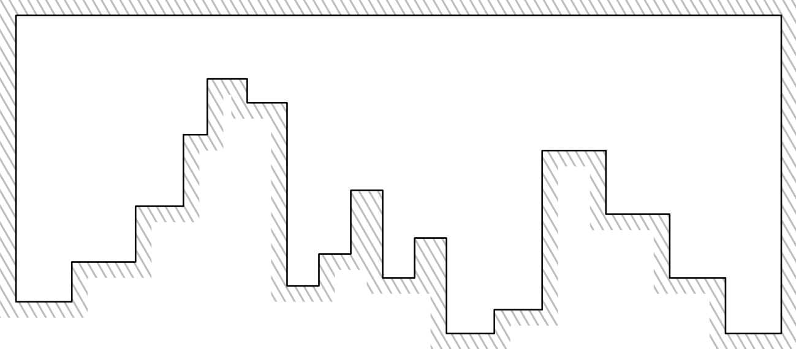

1. The Environment: Histograms and Visibility
Histogram Polygon (P)
In this context, a histogram is a specific type of polygon with two key properties. First, it is orthogonal, meaning all its edges are either vertical or horizontal. Second, it is x-monotone, which means that any vertical line intersects the polygon at most twice. The top of the histogram is a single horizontal edge. The vertices of P are indexed in a counterclockwiser order from 0 to n-1 starting at the left base vertex.

R-Visibility and the Graph G(P)
The connections between vertices are not standard straight lines. Instead, the algorithm uses rectilinear visibility (r-visibility). Two vertices v and w are considered "co-visible" if the axis-aligned rectangle between them lies entirely within the histogram. The network of all such connections forms the r-visibility graph G(P), which is the "map" our algorithm navigates.
2. Vertex Classification
Every vertex in the histogram is classified based on its local geometry, which is crucial for routing decisions. Each vertex has two properties: its orientation (left/right) and its angle (convex/reflex).
- Left vs. Right Vertex: Every vertex is an endpoint of exactly one horizontal edge. If it is the left endpoint, it's a left vertex. Otherwise, it's a right vertex.
- Convex vs. Reflex Vertex: If the interior angle at a vertex is 90° (π/2), it is convex. If the interior angle is 270° (3π/2), it is reflex.
This gives four combined types: l-convex, r-convex, l-reflex, and r-reflex.
3. The Routing Scheme Components
The routing scheme equips each vertex with minimal information to make smart, local decisions.
- Label lab(v): This is the unique address of a vertex v. It contains the vertex's index (vid) and, for reflex vertices and base vertices, the index of a special landmark called its "breakpoint" (br(v)). The label format is (vid, br(v)id) for reflex/base vertices.
- Routing Table p(v): A tiny piece of stored data represented by a single bit indicating whether the left visible neighbor \( \ell(v) \) is higher or lower than the right visible neighbor r(v).
- Link Table: At any given vertex, this is simply a list of the labels of all its directly connected neighbors (N(v)). The algorithm uses this table to identify its neighbors and check if the target is among them.
- Stretch Factor: A measure of path quality. It's the ratio of the routing path's length to the true shortest path's length. This scheme achieves a stretch factor of 1, meaning it always finds the absolute shortest path.
4. Visibility Landmarks
The algorithm doesn't have a global map. Instead, it uses a set of local landmarks visible from the current vertex s to determine the next hop towards a target t.
- Corresponding Vertex cv(v): The other vertex that shares the same horizontal edge as v.
- Left/Right Bounding Vertices \( \ell(v) \) and r(v): From a vertex v, \( \ell(v) \) is the leftmost visible vertex closest to the base edge, and r(v) is defined analogously.
- Interval I(s): The set of all vertices located horizontally between \( \ell(s) \) and r(s), defined as [\( \ell(s) \), r(s)]. A key first step in routing is to check if the target t is within the current interval I(s).
- Near/Far Dominators nd(s, t) and fd(s, t): These are crucial when the target t is inside the current interval I(s) but not directly visible. Let's assume that sx < tx, the other case is symmetric. The near dominator nd(s, t) is the rightmost neighbor of s that is to the left of t. The far dominator fd(s, t) is the leftmost neighbor of s that is to the right of t. These two vertices effectively "gate" the region containing the target.
- Interval between Dominators I(s, t): This is a more specific interval, defined as [nd(s, t), fd(s, t)]. It contains all vertices that lie horizontally between the near and far dominators. When t is in I(s), the algorithm's next goal is to figure out how to get into this sub-interval.
- Breakpoint br(v): This applies to reflex and base vertices and is a key part of the vertex label. For an r-reflex vertex or a left base vertex v, its breakpoint br(v) is the highest visible vertex to its right that is below it. Analogous definitions apply to l-reflex vertices and the right base vertex. This landmark essentially acts as an "escape route" from the pocket created by the reflex vertex.
Routing algorithm explanation
The goal of the algorithm is to find the shortest path from any vertex s to any vertex t using only local information. The routing uses rectilinear visibility.
Preprocessing
At first, the algorithm needs to preprocess each vertex. Here is the preprocessed information:
- Label lab(v):
- lab(v) = vid, if v is not a base vertex and a convex vertex
- lab(v) = (vid, br(v)id), if v is a base vertex or a reflex vertex
- Routing table p(v): a bit that says whether \( \ell(s) \) is higher than r(v) or not
- Link table: a list of lables of all r-visible neighbors
- Landmarks:
- cv(v): corresponding vertex (other endpoint of its horizontal edge)
- \( \ell(v) \): leftmost visible vertex
- r(v): rightmost visible vertex
- br(v): breakpoint (only computed for reflex vertices and base vertices)
- if v is an r-reflex vertex or the left base vertex, br(v) is the left endpoint of the horizontal edge with the highest y coordinate to the right of and below v visible from v
- if v is an l-reflex vertex or the right base vertex, br(v) is the right endpoint of the horizontal edge with the highest y coordinate to the left of and below v visible from v
Routing algorithm
The key concept in this algorithm is the interval I(s) = [\( \ell(s) \), r(s)]
The question we ask ourselves is: "Is the target t inside I(s)?"
Case 1: t is a neighbor of s
Then go directly to t!
Case 2: Target t is outside the interval I(s)
That means the current vertex is inside a "pocket" of the histogram and we need to escape it. We do that by using the 1-bit routing table (made during the preprocessing):
- If \( \ell(v) \) is higher → go to \( \ell(v) \)
- Else → go to r(s)
This guarantees that we climb towards the top of the histogram (and escape the pocket we were in).
Case 3: Target t is inside the interval I(s) but not directly visible
This is the most interesting case.
Let's assume
sx < tx, the other case is symmetric. In this case, two special neighbors are computed:
- Near dominator nd(s, t): the rightmost neighbor of s with x ≤ x(t)
- Far dominator fd(s, t):the leftmost neighbor of s with x ≥ x(t)
The shortest path from s to t must go through either
nd(s, t) or
fd(s, t).
To decide the next hop, we look at nd(s, t) and its breakpoint. The breakpoint b is already computed in the preprocessing since nd(s, t) is a reflex vertex. With the help of the breakpoint b, two "regions" are created:
- [nd(s, t), b]: If t lies in that interval, we choose nd(s, t) as the next hop.
- [cv(b), fd(s, t)]: If t lies in that interval, we choose fd(s, t) as the next hop.
IA Use
- Fixing some css file and scaling problems
- Explaining some notions that weren't clear in the paper (especially in the routing scheme)
- Computing predefined histograms coordinates
Repository Link
The code for this project is available on GitHub:
https://github.com/edenarrr/routing_histogram
Work distribution
| Task |
Done by |
| Study and literature review |
Abderrahmane and Eden |
| Construction of the r-visibility graph |
Abderrahmane |
| Step-by-step simulation of the routing process |
Eden |
Generation/drawing of histogram polygons, user interaction
(source/destination selection) and display of relevant information
such as vertex labels, routing decisions, and total number of hops
|
Abderrahmane and Eden |
| Writing of the explanatory content for the website |
Abderrahmane and Eden |
References
-
Chiu, M.-K., Cleve, J., Klost, K., Korman, M., Mulzer, W., van Renssen, A.,
Roeloffzen, M., & Willert, M. (2020).
Routing in Histograms. In Algorithms and Computation — WALCOM 2020
(pp. 43-54).
https://link.springer.com/chapter/10.1007/978-3-030-39881-1_5